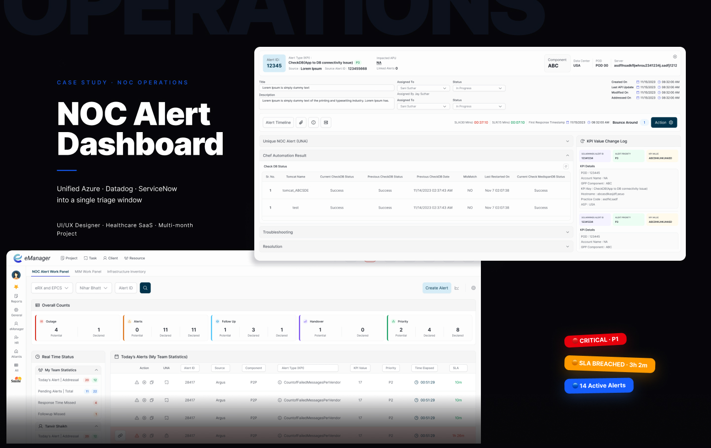
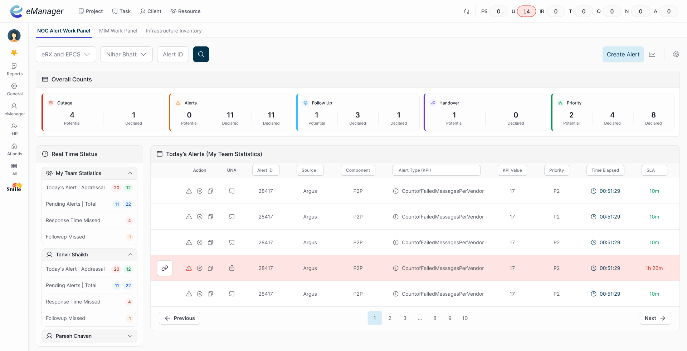
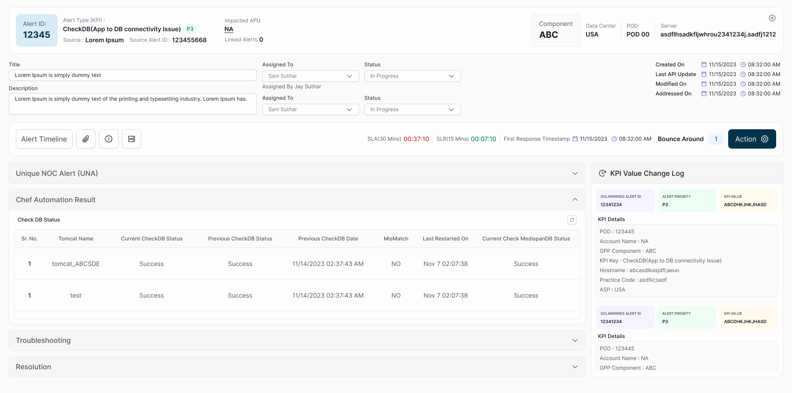

Problem Statement
When a server outage happened, NOC team members couldn’t efficiently identify outages and root causes from a single monitoring screen. They had to check Azure, Datadog, ServiceNow, and internal portals separately. This increased turn-around time and made incident response slower.
Why this mattered
Every context switch added time. For a 24/7 operations team, time is measured in downtime cost. Engineers dreaded the start of an incident- not because the problem was hard, but because the process of understanding it required opening four separate tools in sequence before any action could be taken. Missed alerts during that window had real business consequences.
Hypothesis
What we concluded
A significant constraint: NDA and security protocols meant no direct access to end users for formal research. Instead, I worked with engineering leads and incident managers to map the existing workflow step-by-step, reviewed incident documentation to understand alert volume and type patterns, and treated engineering feedback as proxy user research- explicit, domain-specific, and honest about what slowed them down.
What we did
We designed and built a central alert dashboard. This let NOC managers and team members see alerts from all sources in one place, act on them directly, and keep track of steps taken - all from a single window.
Design Process
Explore
- Looked at existing monitoring dashboards and alert tools.
- Explored options for combining data from different platforms (Azure, Datadog, ServiceNow, Chef) into one screen.
Iterate
- Tested different layouts - table views, timelines, card layouts.
- Rejected options that hid too much info or required extra clicks.
- Balanced detail with clarity to avoid overwhelming the screen.
Key design decisions
- Severity-first visual hierarchy: Critical (red), Warning (amber), Info (blue)- colour-coded at every level so engineers read severity before reading text
- Inline context panel: Clicking an alert opens a right-panel drawer with full timeline, affected systems, and one-click actions (Acknowledge / Escalate / Resolve)- no new tab, no context switch
- Service-grouped sorting: Default sort by service/system group, not timestamp- matches how engineers think about infrastructure during an incident
- Four persistent metric cards: Open, Critical, MTTR, Resolved- always visible so engineers get shift-start status without scrolling
Implement
- Built the dashboard using a modular approach.
- Used APIs to fetch data from each source.
- Created a detail screen for each alert, showing timeline, related events, and resolution steps.
Constraints
- No access to end-users for research due to NDA and security protocols.
- Had to use existing backend APIs.
- Needed to be usable for both technical and less-technical NOC staff.
Screenshots & Notes

NOC work panel- severity-coded alert list with service grouping and persistent metric cards

Alert detail screen- full incident timeline, affected systems, and one-click resolution actions in a right-panel drawer
Final Solution
This made it faster and easier for the NOC team to find, understand, and resolve outages. Fewer clicks, less confusion, faster action.
- Combined all major alert sources into one dashboard.
- Reduced the need to switch between different tools.
- Added detail screens for each alert, with full timeline and resolution steps.
- Included basic analytics for trend tracking and reporting.
Impact & Learnings
Impact
Without pre-project instrumented baselines (restricted by NDA), we documented outcomes through structured walkthroughs with NOC engineers post-launch: tool-switching steps per incident dropped from 4 separate applications to 1. Engineers described first-response time as noticeably faster in retrospective sessions. Formal MTTR tracking was flagged for Q2 instrumentation.
- Fewer missed alerts and handoff mistakes.
- Easier documentation and knowledge sharing.
- Managers could spot patterns and repeat issues more easily.
Learnings
Clarity matters most in high-stress, high-stakes tools. Every extra click slows people down.